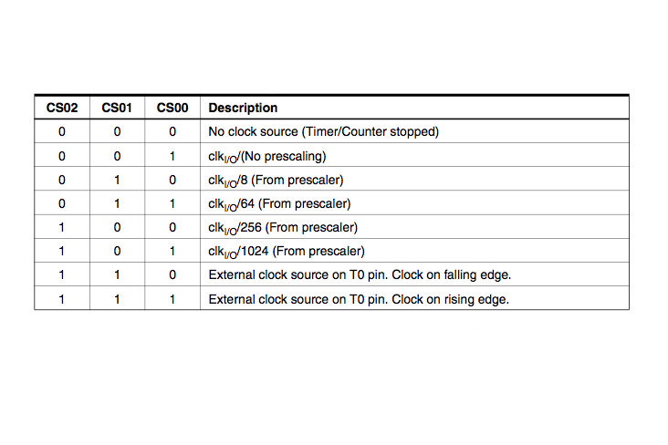
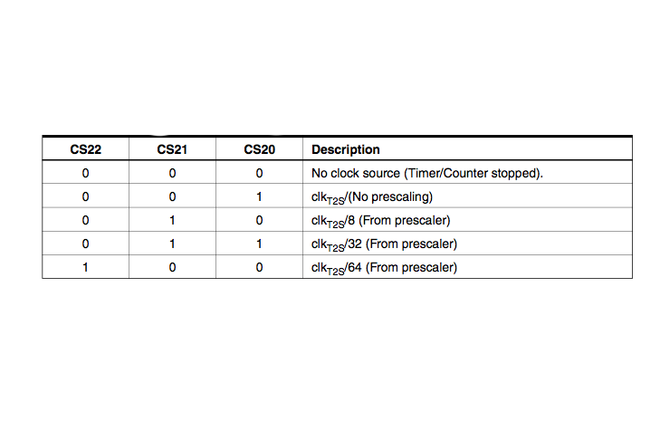

Arduino & Interrupes
Referncias adotadas
Pgina oficial do Arduino: Reference > Libraries > TimerInterrupt - Arduino Reference -- mas esta pgina algo superficial e no traz nenhum exemplo ou informaes relevantes. Traz que existe uma biblioteca capaz de suportar at 16 "ISR"s (Interrupt Service Routines) usando hadrware do C presentes em placas como Arduino Nano,Arduino Uno, Arduino Mega, etc. Para fazer esta biblioteca funcionar necessrio ativar o Library Manager da IDE do Arduino, que estava na verso 1.8.0 em 25/10/2022.
Pgina do Circuits - Instructables >> Arduino Timer Interrupts, que que usaremos como base.
O que so interrupes
As interrupes por software (ou temporizador, timmer) permitem que voc execute uma tarefa em intervalos muito especificamente cronometrados, independentemente do que mais esteja acontecendo em seu cdigo. Neste tutorial explicado como configurar e executar uma interrupo no Temporizador Claro no Compare Match ou no Modo CTC.
Normalmente, quando voc escreve um cdigo na IDE de Arduino (Arduino sketch), o Arduino executa todos os comandos encapsulados na funo loop{} na ordem em que eles so escritos, no entanto, difcil cronometrar eventos no loop(). Alguns comandos demoram mais do que outros para serem executados, alguns dependem de instrues condicionais (if, while...) e algumas funes da biblioteca Arduino (como digitalWrite ou analogRead) so compostas por muitos comandos.
As interrupes por timmer do Arduino permitem pausar momentaneamente a sequncia normal de eventos que ocorrem na funo loop() em intervalosde tempo precisos, enquanto voc executa um conjunto separado de comandos. Uma vez que esses comandos so feitos, o Arduino retoma onde estava no loop().
Interrupes so teis para:
medir um sinal de entrada em intervalos de tempo igualmente e rigorosamente espaados (obedecendo uma frequncia de amostragem constante);
determinar o intervalo de tempo entre dois eventos;
enviar um sinal de uma frequncia especfica verificando periodicamente os dados de uma srie recebidos muito mais...
determinar a velocidade de um motor, lendo informaes peridicas de outro contador que recebe pulsos de um encoder incremental.
Como fazer?
Existem algumas maneiras de programar interrupes, este tutorial se concentra no tipo que parecer ser o mais til/flexvel, chamado de Clear Timer on Compare Match ou CTC Mode.
Ainda: este tutorial serve especificamente para os temporizadores do Arduino Uno (e qualquer outro Arduino com C ATMEL 328/168... Lilypad, Duemilanove, Diecimila, Nano...).

O Arduino Uno possui 3 temporizadores chamados:
Timer0 8 bits;
Timer1 16 bits, e;
Timer2 8 bits.
Cada um dos temporizadores tem um contador que incrementado a cada "tick" do clock do C. As interrupes do temporizador CTC so acionadas quando o contador atinge um valor especificado (overflow), armazenado num registrador especfico usado para realizar a comparao. Uma vez que um contador de temporizador atinja esse valor, ele "recicla" (volta a zero) no prximo tick do clock do temporizador, ento ele continuar a contar at o valor de comparao novamente e assim sucessivamente. Ao escolher o valor de correspondncia de comparao ("compare match register") e definir a velocidade com que o temporizador incrementa o contador, voc pode controlar a frequncia de interrupes do temporizador.
O primeiro parmetro abordado quanto a velocidade com que o temporizador incrementa o contador. O clock do Arduino roda a 16MHz, esta a velocidade mais rpida que os temporizadores podem incrementar seus contadores. A 16MHz cada tick do contador ocorrere a cada: 1/16.000.000 segundos ou 63ns. Ento um contador levar 10/16.000.000 segundos para atingir o valor de 9 (lembrar que o contador conta de 0 9 = 10 estados diferentes) e assim vai levar 100/16.000.000 segundos para atingir um valor de 99, ou 6,25 segundos ou simplesmente: 6,25 segundos para completar esta contagem.
Em muitas situaes, voc ver que definir a velocidade do contador para 16MHz muito rpido.
O Timer0 o Timer2 so temporizadores de 8 bits, o que significa que eles podem armazenar um valor mximo de contagem at 255 ().
O Timer1 um temporizador de 16 bits, o que significa que ele pode armazenar um valor mximo de contagem de 65535 ().
Uma vez que um contador atinja seu mximo, ele voltar a zero (isso chamado de overflow). Isso significa que a 16MHz, mesmo que se defina o registro de correspondncia de comparao com o valor mximo do contador, as interrupes ocorrero a cada 256/16.000.000 segundos (s) para os contadores de 8 bits, e a cada 65.536/16.000.000 ( ms) para o contador de 16 bits.
Claramente, isso no muito til se voc s quiser interromper uma vez por segundo.
Em vez disso, voc pode controlar a velocidade da incrementao do contador de temporizador usando algo chamado prescaler. Um prescaler fixa a velocidade de clock de um temporizador de acordo com a seguinte equao:
Assim, um prescaler =1 incrementar o contador em 16MHz, um prescaler = 8 ir increment-lo a 2MHz (), um prescaler = 64, resultar em 250kHz (), e assim por diante.
O C ATMEL 328/168 permiete definir o prescaler apenas no valores: 1, 8, 64, 256 e 1024. Isto se deve aos bits CS12, CS11 e CS10 do registrador Clock Select Bit -- ver tabelas seguir. Note: 2^0=1; 2^3=8; 2^6=64; 256=2^8 e 2^10=1024.



Agora podemos calcular a frequncia de interrupo pela seguinte equao:
o est l porque o registrador comparador de correspondncia (compare match register) comea a contar em 0 (0 um estado da contagem).
Podemos organizar a equao acima, para calcular o valor necessrio para o registrador comparador de correspondncia (compare match register) gerar a frequncia de interrupo desejada:
Lembre-se ainda que quando voc usa os Timmer0 e o Timmer2 (8 bits) este nmero deve ser menor que 256, e menos de 65536 para o Timmer1 (16 bits).
Exemplo: suponha que voc queira uma interrupo a cada segundo (frequncia de 1Hz), ter que considerar:
Com um prescaler=1024 teremos:
Com este resultado (), conclumos que devemor usar o Timer1 para esta interrupo.
Cdificao de uma ISR no Arduno
A configurao desta interrupo por software (ou timer) realizada dentro da funo setup(..){..} na IDE do Arduino (Arduino sketch).
A estrutura principal da configurao de interrupo esta:
Observe como o valor do OCR#A (o valor do registrador de Compare match value) muda para cada uma dessas configuraes do temporizador. Como explicado na ltima parte, este valor calculado de acordo com a seguinte equao:
Porm, lembre-se que quando voc usa Timer0 ou Timer2 este nmero deve ser inferior a 256, e menos que 65536 para o Timer1. Note tambm que as configuraes entre os 3 temporizadores (timers) diferem ligeiramente na linha de comando que ativa o modo CTC:
TCCR0A |= (1 << WGM01);///for timer0 TCCR1B |= (1 << WGM12);//for timer1 TCCR2A |= (1 << WGM21);//for timer2Estas informaes esto presentes da folha de dados (datasheet) do ATMEL 328/168.
Observe tambm como a configurao (cdigo) para os prescalers seguem as tabelas na ltima etapa (a tabela para o Timer0 foi exibida acima):
TCCR2B |= (1 << CS22); Defina CS #2 bit para 64 pr-escalador para o temporizador 2 TCCR1B |= (1 << CS11); Defina CS #1 bit para 8 pr-escalador para o temporizador 1 TCCR0B |= (1 << CS02) | (1 << CS00); Defina cs #2 e cs#0 bits para 1024 pr-escalar para timer 0Obs.: Note que nesta ltima etapa, que existem diferentes opes de prescaling para os diferentes temporizadores. Por exemplo, o Timer2 no tem a opo de prescaler = 1024.
Os comandos (na IDE do Arduino) que voc deseja executar durante essas interrupes de temporizador seguem o formato:
ISR(TIMER0_COMPA_vect){ //alterar de 0 para 1 para passarr do Timer1 para o Timer2
//interromper os comandos aqui
}Este snap de cdigo deve estar localizado fora das funes de setup() e loop().
Alm disso, tente manter a rotina de interrupo o mais curta possvel, especialmente se voc estiver interrompendo em alta frequncia. Seno o tempo de processamento envolvido apenas com a rotina de tratamento desta interrupo capaz de superar o proprio perodo de tempo especificado entre interrupes (ou perodo de amostragem/scanning).
Pode at valer a pena abordar as portas/pinos do chip ATMEL diretamente em vez de usar as funes digitalWrite() e digitalRead(). Voc pode encontrar mais informaes sobre isso em [Manipulao de Posrtas no Arduino].
Exemplo: o cdigo a seguir configura e executa 3 interrupes do temporizador.
Exemplo de configuraes de timers e interrupes no bloco setup():
//https://www.instructables.com/id/Arduino-Timer-Interrupts/
void setup(){
cli();//stop interrupts
//set timer0 interrupt at 2kHz
TCCR0A = 0;// set entire TCCR0A register to 0
TCCR0B = 0;// same for TCCR0B
TCNT0 = 0;//initialize counter value to 0
// set compare match register for 2khz increments
OCR0A = 124;// = (16*10^6) / (2000*64) - 1 (must be <256)
// turn on CTC mode
TCCR0A |= (1 << WGM01);
// Set CS01 and CS00 bits for 64 prescaler
TCCR0B |= (1 << CS01) | (1 << CS00);
// enable timer compare interrupt
TIMSK0 |= (1 << OCIE0A);
//set timer1 interrupt at 1Hz
TCCR1A = 0;// set entire TCCR1A register to 0
TCCR1B = 0;// same for TCCR1B
TCNT1 = 0;//initialize counter value to 0
// set compare match register for 1hz increments
OCR1A = 15624;// = (16*10^6) / (1*1024) - 1 (must be <65536)
// turn on CTC mode
TCCR1B |= (1 << WGM12);
// Set CS10 and CS12 bits for 1024 prescaler
TCCR1B |= (1 << CS12) | (1 << CS10);
// enable timer compare interrupt
TIMSK1 |= (1 << OCIE1A);
//set timer2 interrupt at 8kHz
TCCR2A = 0;// set entire TCCR2A register to 0
TCCR2B = 0;// same for TCCR2B
TCNT2 = 0;//initialize counter value to 0
// set compare match register for 8khz increments
OCR2A = 249;// = (16*10^6) / (8000*8) - 1 (must be <256)
// turn on CTC mode
TCCR2A |= (1 << WGM21);
// Set CS21 bit for 8 prescaler
TCCR2B |= (1 << CS21);
// enable timer compare interrupt
TIMSK2 |= (1 << OCIE2A);
sei();//allow interrupts
}//end setupProgramao exemplo:
//timer interrupts
//by Amanda Ghassaei
//June 2012
//https://www.instructables.com/id/Arduino-Timer-Interrupts/
/*
* This program is free software; you can redistribute it and/or modify
* it under the terms of the GNU General Public License as published by
* the Free Software Foundation; either version 3 of the License, or
* (at your option) any later version.
*
*/
//timer setup for timer0, timer1, and timer2.
//For arduino uno or any board with ATMEL 328/168.. diecimila, duemilanove, lilypad, nano, mini...
//this code will enable all three arduino timer interrupts.
//timer0 will interrupt at 2kHz
//timer1 will interrupt at 1Hz
//timer2 will interrupt at 8kHz
//storage variables
boolean toggle0 = 0;
boolean toggle1 = 0;
boolean toggle2 = 0;
void setup(){
//set pins as outputs
pinMode(8, OUTPUT);
pinMode(9, OUTPUT);
pinMode(13, OUTPUT);
cli();//stop interrupts
//set timer0 interrupt at 2kHz
TCCR0A = 0;// set entire TCCR2A register to 0
TCCR0B = 0;// same for TCCR2B
TCNT0 = 0;//initialize counter value to 0
// set compare match register for 2khz increments
OCR0A = 124;// = (16*10^6) / (2000*64) - 1 (must be <256)
// turn on CTC mode
TCCR0A |= (1 << WGM01);
// Set CS01 and CS00 bits for 64 prescaler
TCCR0B |= (1 << CS01) | (1 << CS00);
// enable timer compare interrupt
TIMSK0 |= (1 << OCIE0A);
//set timer1 interrupt at 1Hz
TCCR1A = 0;// set entire TCCR1A register to 0
TCCR1B = 0;// same for TCCR1B
TCNT1 = 0;//initialize counter value to 0
// set compare match register for 1hz increments
OCR1A = 15624;// = (16*10^6) / (1*1024) - 1 (must be <65536)
// turn on CTC mode
TCCR1B |= (1 << WGM12);
// Set CS12 and CS10 bits for 1024 prescaler
TCCR1B |= (1 << CS12) | (1 << CS10);
// enable timer compare interrupt
TIMSK1 |= (1 << OCIE1A);
//set timer2 interrupt at 8kHz
TCCR2A = 0;// set entire TCCR2A register to 0
TCCR2B = 0;// same for TCCR2B
TCNT2 = 0;//initialize counter value to 0
// set compare match register for 8khz increments
OCR2A = 249;// = (16*10^6) / (8000*8) - 1 (must be <256)
// turn on CTC mode
TCCR2A |= (1 << WGM21);
// Set CS21 bit for 8 prescaler
TCCR2B |= (1 << CS21);
// enable timer compare interrupt
TIMSK2 |= (1 << OCIE2A);
sei();//allow interrupts
}//end setup
ISR(TIMER0_COMPA_vect){//timer0 interrupt 2kHz toggles pin 8
//generates pulse wave of frequency 2kHz/2 = 1kHz (takes two cycles for full wave- toggle high then toggle low)
if (toggle0){
digitalWrite(8,HIGH);
toggle0 = 0;
}
else{
digitalWrite(8,LOW);
toggle0 = 1;
}
}
ISR(TIMER1_COMPA_vect){//timer1 interrupt 1Hz toggles pin 13 (LED)
//generates pulse wave of frequency 1Hz/2 = 0.5kHz (takes two cycles for full wave- toggle high then toggle low)
if (toggle1){
digitalWrite(13,HIGH);
toggle1 = 0;
}
else{
digitalWrite(13,LOW);
toggle1 = 1;
}
}
ISR(TIMER2_COMPA_vect){//timer1 interrupt 8kHz toggles pin 9
//generates pulse wave of frequency 8kHz/2 = 4kHz (takes two cycles for full wave- toggle high then toggle low)
if (toggle2){
digitalWrite(9,HIGH);
toggle2 = 0;
}
else{
digitalWrite(9,LOW);
toggle2 = 1;
}
}
void loop(){
//do other things here
}As imagens a seguir mostram as sadas dessas interrupes do temporizador.
A prxima figura mostra uma onda quadrada oscilando entre 0 e 5V a 1kHz (temporizador0 interrupo).
A prxima figura mostra o LED ligado ao pino 13 ligado por um segundo e depois desligando por um segundo (tempor1 interrupo).
E a prxima figura mostra uma onda de pulso oscilando entre 0 e 5V em uma frequncia de 4khz (timmer2 interrupo).

Na sequncia deste tutorial mostrado como montar um Velocmetro de bicicleta usando o Arduino
Em outra parte do tutorial (Passo 4), existe o exemplo de Comunicao Serial, um ponto eventualmente ser considerado lembrando que ao mesmo tempo que estaremos executando a rotina de controle, vamos querer exportar dados em "tempo-real" do processo, durante sua execuo.
Na Parte 5, apresentado o exemplo de um conversor D/A, no qual foi implementada um DAC usando rede Ladder R2R de 8-bits. Nesta abordagem em particular, a funo original analogWrite() da IDE do Arduino foi sobreescrita para dar lugar a outra funo configurada manualmente.
Sugere-se uma olhada neste outro material tambm para saber como gerar de maneira correta determinada forma de onda: https://www.instructables.com/id/Arduino-Waveform-Generator/.
ltimas observaes
Certas configuraes de temporizadores realmente desativaro algumas das funes millis() e delay(). Se voc configura manualmente o timmer0, essas funes no funcionaro corretamente.
Se existe alguma parte do cdigo que no pode ser interrompida, considere usar as funes:
para desativar/habilitar globalmente interrupes.
O site do Arquino traz algo sobre interrupes na parte em que que trata sobre [geradores de PWM].